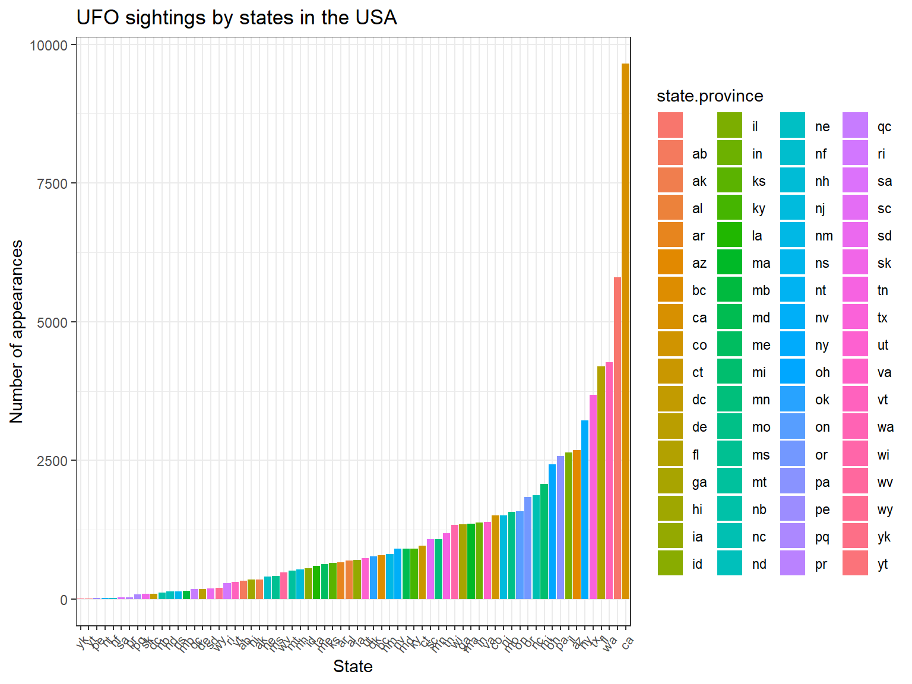
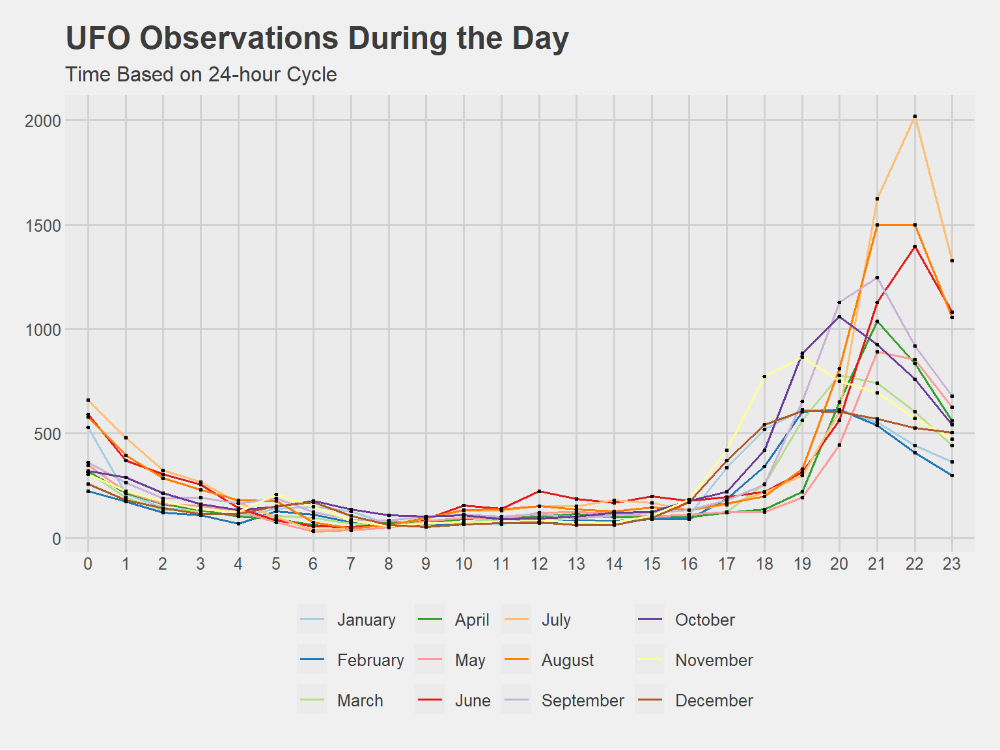
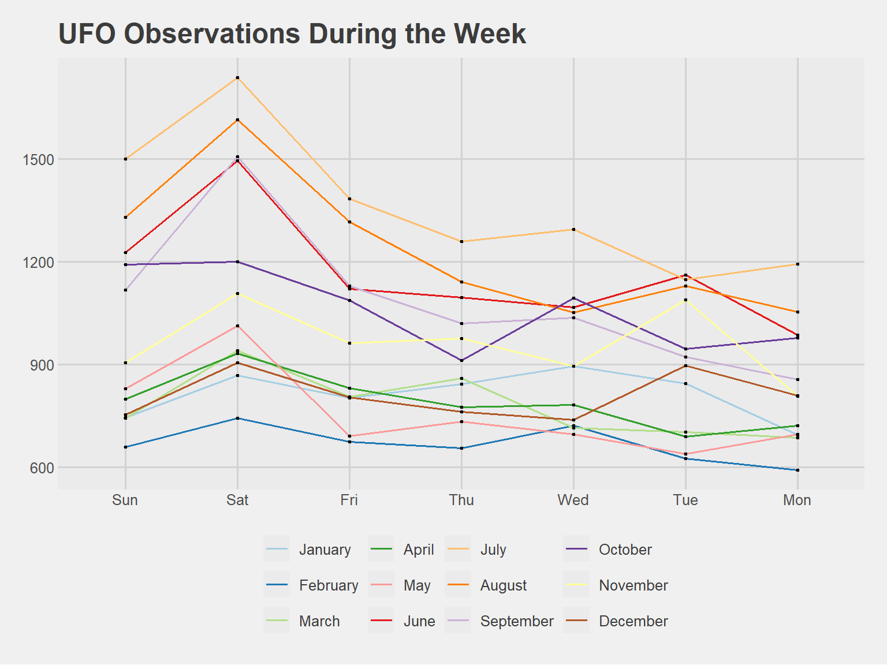

WHERE CAN YOU FIND E.T.?
Tyler Guerrero, Emanuel Padilla, Cameron Snyder
Slide 6: Overview of Data and Where
## `summarise()` has grouped output by 'year'. You can override using the
## `.groups` argument.## Warning in geom_histogram(stat = "identity", width = 1, color = "white", :
## Ignoring unknown parameters: `binwidth`, `bins`, and `size` - With a quick overview, we can see that most reports do not actually
occur until after ~1995. - We believe this is most likely attributed to
the lack of public, internet access before then.
- With a quick overview, we can see that most reports do not actually
occur until after ~1995. - We believe this is most likely attributed to
the lack of public, internet access before then.
slide 8: United States View
## Warning in geom_map(data = states_map, map = states_map, aes(x = long, y = lat,
## : Ignoring unknown aesthetics: x and y - Our initial thought was that most reports would come out of the rural
midwest. - It appears that might not be the case. Maybe a density plot
will help us understand where the focus of reports are…
- Our initial thought was that most reports would come out of the rural
midwest. - It appears that might not be the case. Maybe a density plot
will help us understand where the focus of reports are…

Slide 10: Additional Graphs
## `summarise()` has grouped output by 'hour'. You can override using the
## `.groups` argument.
## `summarise()` has grouped output by 'weekday'. You can override using the
## `.groups` argument.